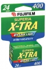
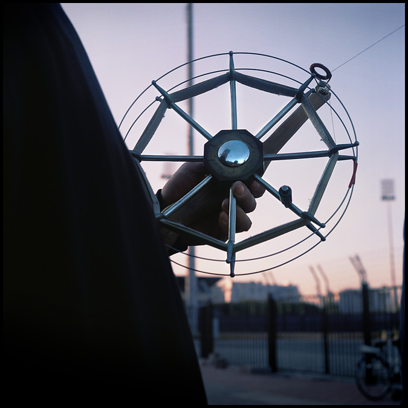
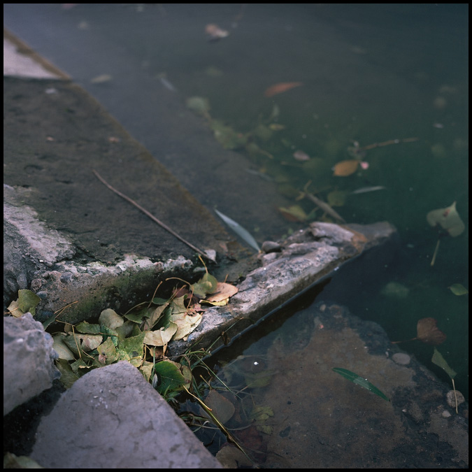
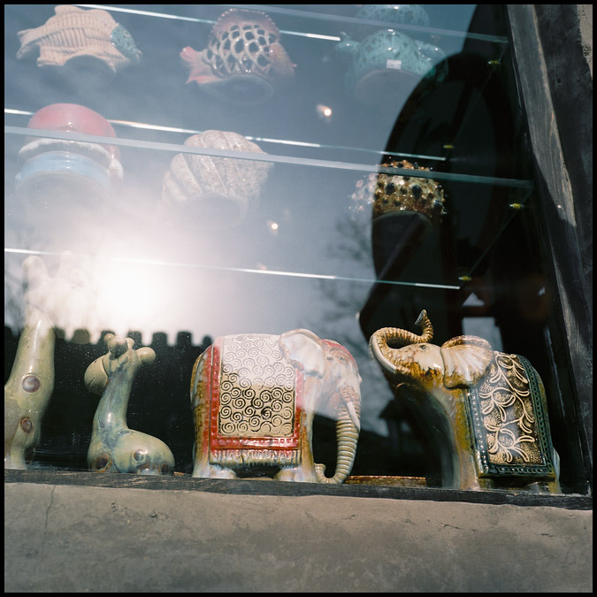
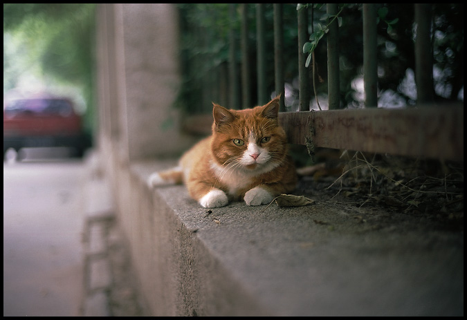

器材库 > 负片 > Fujicolor Superia X-TRA 400

该产品没有存档的规格参数
柒郎2014-01-18 22:073 分
性价比 3.00色彩还原 3.00分辨率 3.00锐利度 3.00颗粒度 3.00反差 3.00色饱和度 3.00宽容度 3.00倒易率允许 3.00

siliconworm2010-10-19 13:07
Pantrol2010-04-01 19:564.83 分
性价比 5.00色彩还原 4.50分辨率 4.50锐利度 4.50颗粒度 5.00反差 5.00色饱和度 5.00宽容度 5.00倒易率允许 5.00
siliconworm2009-09-26 12:234.83 分
性价比 5.00色彩还原 5.00分辨率 5.00锐利度 5.00颗粒度 5.00反差 4.50色饱和度 4.50宽容度 5.00倒易率允许 4.50
peteryu0072009-08-14 17:544 分
性价比 4.00色彩还原 4.00分辨率 4.00锐利度 4.00颗粒度 4.00反差 4.00色饱和度 4.00宽容度 4.00倒易率允许 4.00
上帝武装2009-08-09 14:354.28 分
性价比 4.50色彩还原 4.50分辨率 4.50锐利度 4.50颗粒度 4.00反差 4.00色饱和度 4.00宽容度 4.50倒易率允许 4.00
古世2008-09-29 09:554.61 分
性价比 5.00色彩还原 4.50分辨率 4.50锐利度 5.00颗粒度 4.50反差 4.50色饱和度 4.50宽容度 4.50倒易率允许 4.50




hunter06182008-06-11 21:264.61 分
性价比 5.00色彩还原 4.50分辨率 4.50锐利度 4.50颗粒度 5.00反差 4.50色饱和度 4.50宽容度 4.50倒易率允许 4.50
迅2008-02-17 23:544.78 分
性价比 5.00色彩还原 5.00分辨率 4.50锐利度 4.50颗粒度 4.50反差 4.50色饱和度 5.00宽容度 5.00倒易率允许 5.00
光阴de故事2006-01-26 21:063.61 分
性价比 3.50色彩还原 3.50分辨率 3.50锐利度 3.50颗粒度 4.00反差 3.00色饱和度 3.50宽容度 4.00倒易率允许 4.00
该产品暂无存档的产品图
评测 / 相关文章
该产品暂无存档的评测文章